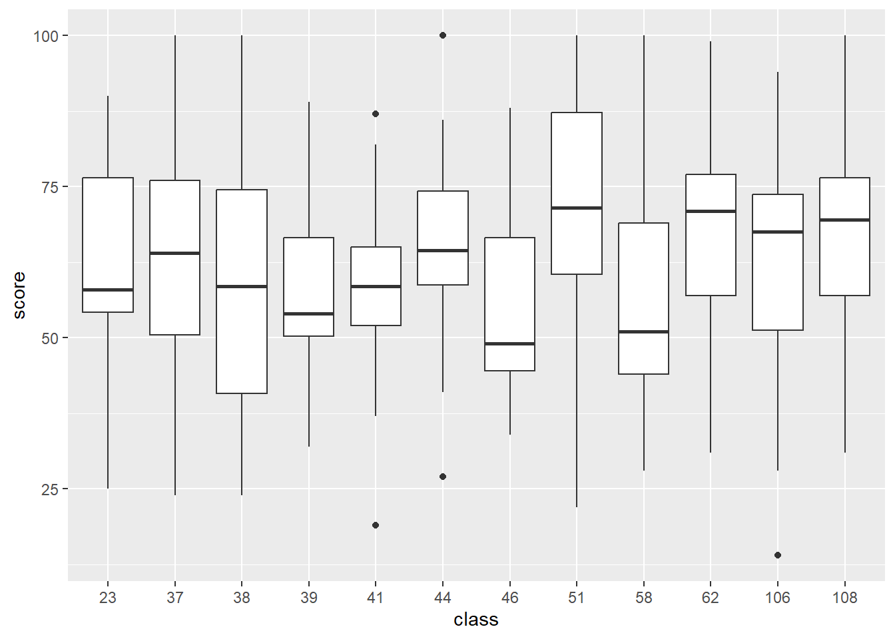
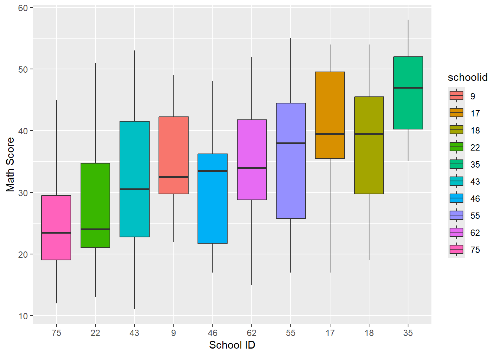

library(tidyverse);library(knitr)
library(sampling); library(survey)Cluster Sampling
When units are not necessarily nicely defined, even when the population is.
Introduction
Example of Clustering:
When taking a survey of a community, rather than do an SRS of households, you might break up the community into blocks and take an SRS of blocks and sample all or some of the households that fall within those blocks. The blocks are your psus, and the households are your ssus. This method might be less costly if you were doing an in person survey, but might also be less accurate.
Why use Cluster Sampling?
Clustering is most common for its application.The purpose of stratifying a sample before was to better your prediction or accuracy when the variance varied quite differently among the population. It is not quite the same for Cluster Sampling, for it actually decreases in precision due to some positive correlation between unmeasurable factors that effect certain specific clusters.
We use Cluster Sampling when: 1. It may be unfeasible or expensive to construct a sampling frame of the population, and breaking into groups may make sampling doable. 2. In some populations, it’s less costly to sample in clusters, in terms of travel and time.

When clusters are Ignored
When clusters are ignored in the design or analysis phase, the sample can mistakenly be treated as if it were using the simple random sampling design. When they are ignored they can lead to incorrect formulas that have inaccurate conclusions. For example, when we analyze our sample as an SRS the variability can be underestimated on account of the clusters being designed to be more similar and homogeneous compared to an SRS and stratified sample. This will lead to values that are too small and confidence intervals that can be too narrow.
- In this study they took 16 female and 16 male professors and matched them by their subjects, experience, and tenure status.
- They then sampled each of their classrooms full of students for data collection.
- They, in total, collected 1029 individual student responses but since we are using cluster sampling the sample size will be n = 32 as there are 32 total clusters. The analysis would be wrong if we ignored that it was a cluster sample and treated it as an SRS of size 1029.
This is a great real world example of how cluster sampling can streamline collecting important data while still gaining valuable insight.
Notation & Formulas
In SRS, each individual element is the sampling unit, and has an equal chance to be sampled. In stratified sampling, the population is divided into \(H\) known strata, and a sample is taken from each. Our sampling unit in the cluster design is the entire cluster, or primary sampling unit \(psus\), and not the individual elements.
In stratified sampling we have our entire population being \(N\) total population of each individual element, whereas our entire universe in cluster sampling is the number of clusters, that is \(N\) is the number of \(psus\).
⚠️ Note notation change!
- \(y_{ij}\): measurement for the \(j\)th element in \(i\)th psu
- \(N\): the number of clusters (psus) in the population
- \(n\): the number of psus from the sample
- \(M_{i}\): number of ssus in psu \(i\) in the population
- \(m_i\): the number of ssu’s in psu \(i\) from the sample
- \(M_{0}\): total number of ssus in the population
| Population Quantity | Estimator \((\hat{\theta})\) | Estimated variance of \((\hat{\theta})\) |
|---|---|---|
| Total in psu \(i\): \(t_{i}=\sum_{j} y_{ij}\) | \(\hat{t}_{i} = \frac{M_{i}}{m_i}\sum_{j} y_{ij}\) | - |
| Variance of psu totals : \(S_t^2 = \frac{1}{N-1} \sum_{i} \left( t_i - \frac{t}{N} \right)^2\) | \(s_t^2 = \frac{1}{n-1} \sum_{i} \left( t_i - \frac{\hat{t}}{N} \right)^2\) | AKA variance between psu |
| Overall Total: \(t = \sum_{i} t_i\) | \(\hat{t} = \frac{N}{n}\sum_{i} \hat{t}_i\) | \(N^2 \left(1 - \frac{n}{N}\right) \frac{s_t^2}{n}\) |
| mean in psu \(i\): \(\mu_{i} = \frac{1}{M_i} \sum_{j} y_{ij}\) | \(\bar{y}_{i} = \frac{1}{m_i} \sum_{j} y_{ij}\) | \(s_{i}^{2} = \frac{1}{m_i-1} \sum_{j} (y_{ij}-\bar{y}_{i})^2\) (AKA variance within psu) |
| Overall mean: \(\mu = \frac{1}{M_0} \sum_{i} \sum_{j} y_{ij}\) | \(\bar{y} = \frac{\hat{t}}{NM}\) | \(\left( 1 - \frac{n}{N} \right) \frac{s_t^2}{nM^2}\) |
Overall there are many differences between clustering, stratification, and SRS, that are important to note.
One-Stage Clustering Sampling
Equal size clusters: Estimation
One-stage clustering is the type of clustering you’re probably already familiar with - either all (or none) of the observations inside of a cluster (psu) are sampled.
While this is an unrealistic scenario for most statistical work in the social sciences, agricultural or industrial surveys may be able to take advantage of the much simpler process that equal size clustering brings.
Because the psus are selected through an SRS, we can use the per-cluster estimates as single observations in an SRS. There’s no need to consider the individual ssus within each cluster. Important distinction: we treat this as an SRS of \(n\) psus, not an SRS of \(nM\) observational units.
In this setup, we typically aim to estimate the population total or mean of a variable of interest based on the totals from each sampled cluster.
Example 5.2: Average GPA in a dorm
Perhaps we want to estimate the average GPA in a college dormitory with a one-stage cluster design. The dorm consists of 100 units, each with 4 students. Here’s the process:
- An SRS is conducted to select 5 clusters.
- All 4 students (ssus) per dormitory unit (psus) have their GPAs measured
- Calculate your estimates based on your psu statistics, not your ssu measurements.
(Slightly modified version of Example 5.2 from Lohr’s R Companion to Sampling 3rd ed. Page 57. DOI: 10.1201/9781003228196-5)
gpa <- readr::read_csv(here::here("data", "gpa.csv"))
N <- 100 # total dorm population (this won't be NROW(gpa)!)
n <- 5 # total number of clusters/psus selected
M <- 4 # observational units/ssus selected per psuUsing equations
To estimate the mean, we first estimate the total (because it’s easier math).
The estimated total is calculated by a weighted sum of the cluster totals. \[ \hat{t} = \frac{N}{n} \sum_{i \in S} t_i \]
We can use the tapply function to calculate the sum of gpa across each suite.
(suitesum <- tapply(gpa$gpa, gpa$suite, sum)) 1 2 3 4 5
12.16 11.36 8.96 12.96 11.08 # gpa %>% group_by(suite) %>% summarize(t_i = sum(gpa)) # alternative methodThe variance across these totals can be found using the standard variance formula: \[ s_t^2 = \frac{1}{n-1} \sum_{i \in S} \left( t_i - \frac{\hat{t}}{N} \right)^2 \]
(st2 <- round(var(suitesum), digits = 3)) [1] 2.256Now we can convert these estimates of the total to estimates of the mean using:
\[ \hat{y} = \frac{\hat{t}}{NM} \qquad \mbox{ and } \qquad \text{SE}(\hat{y}) = \frac{1}{M} \sqrt{\left(1 - \frac{n}{N}\right) \frac{s_t^2}{n}} \]
t.hat <- sum(suitesum)*(N/n)
(y.bar.hat <- t.hat/(M*N))[1] 2.826(se.ybar.yat <- (1/M)*sqrt((1-n/N)*(st2/n)))[1] 0.1636765Using the survey package
Create a survey design for one-stage clustering
OSC_gpa <- svydesign(id = ~suite,
weights = ~wt,#already on the data set
fpc = ~rep(100,20),
data = gpa)calculate the mean GPA with SE
svymean(~gpa, OSC_gpa) mean SE
gpa 2.826 0.1637Sampling Weights
In one-stage cluster sampling with equal-sized clusters, each cluster is treated as a single observation. The sampling weight for each observation unit \(j\) in PSU \(i\) is based on the inverse probability of that PSU being selected. This results in a self-weighting sample, meaning every sampled element gets the same weight.
\[ w_{ij} = \frac{N}{n} \]
The total sampling weight across all sampled units equals the total number of units in the population (\(NM\)). Make sure to always verify that the sum of your weights matches the population size. Population total and mean can also be estimated using these weights by summing the weighted values or averaging them appropriately.
This weighting approach allows you to use one-stage cluster sampling estimates similarly to how you’d handle stratified or SRS data, despite the cluster structure.
Equal size clusters: Theory
Comparing a cluster sample with an SRS of the same size
For cluster sampling, the variability of the unbiased estimator of \(t\) depends entirely on between the psus rather than within psus.
\[V(\hat t_{cluster}) = N^2 (1 - \frac{n}{N}) \Big( \frac{M(MSB)}{n}\Big)\]
The MSW is not used for calculating the variance in cluster sampling like it is in stratified sampling. While stratified sampling is best when there is a lot of variance within strata, cluster sampling is less effective if there’s a lot of variance within psus.
If the ratio of MSB/MSW is large, it means that stratified sampling will be more precise and cluster sampling will be less precise.
A high ICC means that items in the same cluster are very similar, indicating a high level of homogeneity. A low ICC means that items within the cluster are more different from each other.
The higher the ICC, the less efficient the sample is compared to simple random sampling (SRS). This is because high ICC indicates redundancy within clusters. The loss in precision due to clustering can be estimated by comparing the variance of cluster sampling over the variance of the SRS.
ICC is typically positive in naturally occurring clusters. For example, wealthy families living in the same neighborhood, or crops in a field exposed to the same pesticide levels, are likely to show positive ICC due to environmental or social factors.
In contrast, ICC can be negative in artificially constructed or systematic clusters. A negative ICC indicates that items within a cluster are more dispersed than in a randomly selected group. This often results in cluster means being roughly equal, and in such cases, cluster sampling can actually be more efficient than SRS.
In that example, the sampling unit was a single tree, the observational unit was a single seedling by the tree, and the population of interest was all the trees on Santa Cruz Island. Then, an SRS was conducted!
But we’re doing cluster sampling right now. So, suppose that the researcher was instead interested in seedling survival across all of California. The researcher would have divided the regions into equal-sized areas, randomly-selected some of those areas to study, and recorded the measurements.
The sampling unit is no longer a tree, it’s an area!
So, if Santa Cruz Island was selected as one of those areas in our study about all of California, then we could no longer treat the trees from Santa Cruz Island as though they were part of an SRS from all trees in California. They’re all similar trees, from the same island, that experience identical climates, in almost the same soil. We would expect all ten trees on Santa Cruz Island to experience, as a group, different environmental factors (such as weather conditions and numbers of seedling eaters) than the ten trees selected in the Santa Ynez Valley on the mainland. Thus the ICC within each cluster (area) would likely be positive.
But…
What if we were only interested in the seedlings from the 10th tree on Santa Cruz Island? Then, the population is all seedlings from the 10th tree and the psu is the seedling. At this point, we’re not doing cluster sampling, we’re doing a census of the population!
Unequal size clusters
The unbiased estimator(s) for the total are: \[\hat t_{unb} = \frac{N}{n}\sum_{i \in S}t_i \qquad \mbox{ with } \qquad SE(\hat t_{unb}) = N \sqrt{(1-\frac{n}{N})(\frac{s_t^2}{n})}\]
- Note that the error of the estimator is dependent on the variance of the cluster totals (\(s_t^2\))
- The variation among the individual cluster totals \(t_i\) is likely to be large when clusters have different sizes.
\[M_0 = \sum_{i}^N M_i\]
\[\hat{\bar{y}}_{unb} = \hat t_{unb}/M_0\]
\[SE(\hat{\bar{y}}_{unb}) = SE(\hat t_{unb})/M_0\]
- The size of every psu is needed to be known for this formula.
- The unbiased estimator for the mean can be inefficient when values of M_i’s are unequal for the same reasons the unbiased estimate of the total can be inefficient
- A ratio estimator of the mean often has smaller variance.
Ratio Estimation
We usually expect \(t_i\) to be positively correlated with \(M_i\).
- Example: If the primary sampling units (PSUs) are counties, we would expect the total number of households living in poverty in county \(i(t_i)\) to be roughly proportional to the total number of households in the country \(i(M_i)\)
Therefore our population mean is a ratio where \(t_i\) and \(m_i\) are positively correlated. We define that now as:
\[ \widehat{\bar{y_r}} = \frac{\hat{t}_{umb}}{\widehat{M_0}} = \frac{\frac{N}{n} \sum_{i \in S} t_i}{\frac{N}{n} \sum_{i \in S} M_i} = \frac{\sum_{i \in S} M_i \bar{y_i} }{\sum_{i \in S} M_i} \]
- The estimator \(\widehat{\bar{y_r}}\) is the quantity \(B\) in 4.1. (Our sample’s ratio mean.)
The denominator is a random quantity that depends on which particular clusters are included in the sample. If the \(M_i\) are unequal and a different cluster sample of size \(n\) is taken, the denominator will likely be different. From taking \(e_i = t_i - M_i \widehat{ \bar{y_r}} = M_i (\bar{y}_i - \widehat{\bar{y_i}})\) we have:
\[\text{SE}(\widehat{\bar{y_r}}) = \sqrt{\left(1 - \frac{n}{N}\right) \frac{s_r^2}{nM^2}}\]
and,
\[ s_r^2 = \frac{1}{n-1} \sum_{i \in S} M_i^2 \left( \bar{y}_i - \widehat{\bar{y_i}}\right)^2 \]
- \(\bar{M} = \frac{\widehat{M_0}}{N}\) represents the average size of the PSUs in the sample.
- The variance of the ratio estimator depends on the variability of the means per element in the PSUs and can be much smaller than that of the unbiased estimator \(\hat{\bar{y}}_{unb}\).
- This can also be done when we know our cluster sizes.
Estimation using weights
\[ w_{ij} = \frac{1}{\mbox{probability of w_{ij} being in the sample}} = \frac{N}{n} \]
- One stage clustering has self-weighting samples no matter whether the clusters are equal sizes or not
- In clusters of equal sizes, the weights sum to the population size but in clusters of unequal sizes the sum of the weights estimates the population size.
\[\hat M_0=\sum_{i\in S}\sum_{j \in S_i}w_{ij} = \frac{N}{n}\sum_{i \in S}\]
- \(\hat M_0\) is a random variable, different for every sample.
Using weights:
\[\hat t_{unb} = \sum_{i\in S}\sum_{j \in S_i}w_{ij}y_{ij}\]
\[\hat{\bar{y_r}}= \frac{\sum_{i\in S}\sum_{j \in S_i}w_{ij}y_{ij}}{\sum_{i\in S}\sum_{j \in S_i}w_{ij}}\]
- Load in the data and look at the first few rows. Explain what the values in each column mean.
algebra <- readr::read_csv(here::here("data", "algebra.csv"))
head(algebra)# A tibble: 6 × 3
class Mi score
<dbl> <dbl> <dbl>
1 23 20 57
2 23 20 90
3 23 20 56
4 23 20 57
5 23 20 46
6 23 20 55- Each row is a student, with three columns:
class,Mi, andscore. classis a number representing which class the student is in. These are the psus.Miis the number of students in that specific class. For class 23, there are 20 students.scoreis the score the student earned on the given test.
- Plot the distribution of test score by class. Interpret your graph by comparing the medians, ranges, and variances across classes. What do you notice?
algebra$class <- as.factor(algebra$class)
ggplot(algebra, aes(x = class, y = score)) + geom_boxplot()
algebra %>% group_by(class) %>% summarise(median = median(score),
min = min(score),
max = max(score),
var = var(score))# A tibble: 12 × 5
class median min max var
<fct> <dbl> <dbl> <dbl> <dbl>
1 23 58 25 90 310.
2 37 64 24 100 461.
3 38 58.5 24 100 420.
4 39 54 32 89 200.
5 41 58.5 19 87 188.
6 44 64.5 27 100 193.
7 46 49 34 88 253.
8 51 71.5 22 100 329.
9 58 51 28 100 546.
10 62 71 31 99 282.
11 106 67.5 14 94 355.
12 108 69.5 31 100 227.There is a large range between the minimum and the maximum score in each class, with all of the minimums being between 14 and 34 and all of the maximums being between 87 and 100. We can also see some pretty large differences in median between classes, for example Class 46 has a median score of 49.0 and Class 51 has a median score of 71.5. For variance, the lowest class is Class 41 with about 188, and the largest class is Class 58 with about 546.
- How many psus are there? What is the psu with the highest number of ssus? Which one has the least? You must answer this question using R functions such as
uniqueortable. Don’t count this by hand (practice for when you have a billion rows)
(n <- length(unique(algebra$class))) # Total number of psu[1] 12psu <- table(algebra$class)
(psu.max.ssu<- names(which.max(psu))) # PSU with most SSUs[1] "39"(max.ssu<- max(algebra$Mi)) #This shows the max SSU[1] 34(psu.min.ssu<- names(which.min(psu))) # PSU with fewest SSUs[1] "58"(min.ssu<-min(algebra$Mi)) #This shows the minimum SSU[1] 17There are 12 psus which are the classes. The psu with the highest number of ssus is class 39 with 34 ssus, and the smallest ssus is class 58 with 17 ssus.
- Add variables containing the weights and the
fpcto this data set.
N <- 187
algebra <- algebra %>%
mutate(wt = N/n,
fpc=rep(187,299))- Using the proper functions from the
surveypackage, estimate the population average algebra score, with a 95% interval and interpret your interval. Be sure to NOT assume a Z-distribution for this confidence interval but use thedegffunction to get the proper degrees of freedom out of the survey design object and pass it to theconfintfunction.
design <- svydesign(
id = ~class,
fpc = ~Mi,
weights = ~wt,
data = algebra
)
# the mean
mean_estimate <- svymean(~score, design)
# degrees of freedom function
df <- degf(design)
#conf. interval, t distribution
ci <- confint(mean_estimate, df = df)
(mean_estimate) mean SE
score 62.569 0.9752(ci) 2.5 % 97.5 %
score 60.42224 64.71488Two-Stage Clustering Sampling

Unbiased estimator of population total.
To estimate the total for each PSU (\(\hat{t_i}\)) we multiply the total number of SSUs in a PSU (\(i\)) by the average of the sampled SSUs in a PSU (\(i\)). This is then used in equation (5.21) to get the unbiased estimate of the total population. This is essentially scaling up the estimates using the known sizes:
- \(N\) (total number of PSUs in the population)
- \(n\) (Number of PSUs sampled)
- \(M_i\) (total number of SSUs in PSU_i)
- \(m_i\) (number of SSUs actually sampled in PSU_i).
Survey weights
The chance of selecting any SSU depends on:
- The chance that its PSU was selected in the first stage.
- The chance that the SSU was selected in the second stage within that PSU.
The sampling weight for each SSU is the reciprocal of its selection probability. It tells you how many units in the population that one SSU is meant to represent.
If all PSUs sample SSUs in proportion to their size, the design is self-weighting.
\[w_i = NM_i / nm_i\]
Variance estimation for two-stage cluster samples.
Variance \(\hat{t}\) has 2 components: the variability between psu’s and the variability of of ssus within psu’s.( We don’t have to worry about this with one stage clustering.)
Essentially what the equation is doing is proving that the second term in the 5.24 equation goes to zero so you don’t need to account for this. The equation below calculates the variance for the sample variance among psu totals and then calcs the sample variance within the psu i.
Example 5.7: More estimation of math scores.
The file schools.csv contains data from a two-stage sample of students from hypothetical classes. The final weights are provided in the variable finalwt.
- During the first stage of sampling, an SRS of size n = 10 schools was selected from a population of N = 75 schools overall.
- During the second stage of sampling, an SRS of size \(m_i\) = 20 students was selected from each sampled school.
- Tests for reading and math scores were administered for individuals.
schools <- readr::read_csv(here::here("data", "schools.csv"))
#factorizing our school ids
schools$schoolid <- as.factor(schools$schoolid)a) Create side by side boxplots for the math score for sampled schools. Which do you think is larger, the within or between cluster variance?
ggplot(schools, aes(x = reorder(schoolid, math, FUN = median),
y = math, fill = schoolid)) +
geom_boxplot() +
labs(x = "School ID", y = "Math Score") 
From the way the medians of each of the schools differ from each other greatly, it seems that the between cluster variance is greater than the within cluster variance.
b) Create an ANOVA table for this example. Is your interpretation from the graph upheld by this analysis?
aov(math ~ schoolid, data=schools) |> summary() Df Sum Sq Mean Sq F value Pr(>F)
schoolid 9 7018 779.8 7.583 1.79e-09 ***
Residuals 190 19538 102.8
---
Signif. codes: 0 '***' 0.001 '**' 0.01 '*' 0.05 '.' 0.1 ' ' 1Yes. The Mean Sq for the first row of the Anova table is the between clusters mean squares(MSB), while the second row’s Mean Sq is the within clusters mean squared (MSW). Since the MSB is seven times the MSW, the Anova table supports our hypothesis that the variance between clusters(schools in this example) is greater than the variance within clusters.
c) Estimate with proper 95% CI the average math score for the population of students under consideration.
Since we don’t have the knowledge about the population to calculate the fpc, we will treat this sample as if it were taken with replacement and not use the finite population corrector in the survey design for using the survey package.
dschools <- svydesign(id=~schoolid,
weights=~finalwt,
data=schools)We will save the mathmean information to use to calculate our confidence interval
mathmean <- svymean(~math,dschools)
mathmean mean SE
math 33.123 1.7599This is the confidence interval using the t-distribution with 9 degrees of freedom since we have 10 schools, or clusters, within our sample. Note that our degrees of freedom is the number of psus - 1, not the number of ssus - 1. This is a cluster sample, not an SRS.
confint(mathmean,df=degf(dschools)) 2.5 % 97.5 %
math 29.14179 37.1041Our sample mean math score is 33. We are 95% confident that the true average math score for the population we are considering is between 29 and 37.